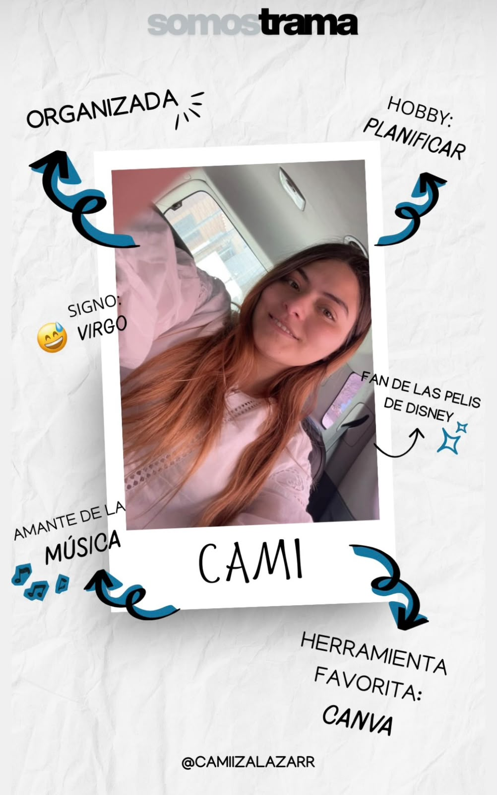
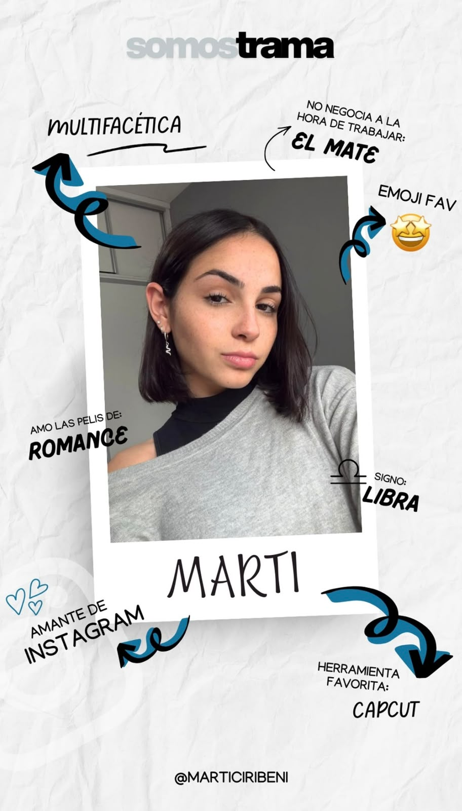
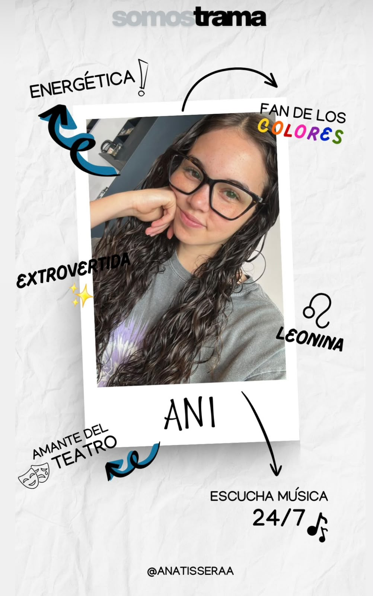

Estrategia + creatividad digital
Tus redes pueden dejar de ser una tarea y empezar a mover tu marca.
Diseñamos una comunicación clara, cercana y con dirección para que tu negocio conecte, se vea profesional y crezca.
Quiero activar mi comunicación ↗01
El punto de partida
No necesitás publicar más.
Necesitás que cada cosa que publiques tenga sentido.
Cuando las redes se manejan sin una idea detrás, sostenerlas se vuelve agotador y el resultado no representa el valor de tu marca.
En TRAMA ordenamos esa energía: conectamos identidad, objetivos y contenido para que tu comunicación trabaje a favor de tu crecimiento.
Sobre TRAMA
NADA AISLADO
TODO CONECTADO
Somos TRAMA.
No creemos en los posteos aislados.
Creemos en las ideas que se conectan, en los procesos, en el detrás de escena y en las decisiones que construyen marcas con sentido.
TRAMA nace de entender que la comunicación no es solo estética ni solo estrategia: es el equilibrio entre ambas. Es diseño con intención, contenido con dirección y marcas que cuentan algo más que lo que se ve en pantalla.
Acá vas a encontrar pensamiento creativo, estrategia digital, pruebas, errores, aprendizajes y mucho proceso. Porque para nosotros, cada marca es una historia en construcción y cada contenido es un hilo más que la fortalece.
Esto es el comienzo.
Nada aislado. Todo conectado.
Las personas detrás de TRAMA
Estrategia, creatividad y una mirada que conecta.
Conocé a quienes transforman las ideas de tu marca en una comunicación con dirección.

Martina

Ana
02
Lo que hacemos
Una presencia digital que se siente tan propia como tu marca.
Manejo de redes sociales
Pasamos de la presión de “tener que publicar” a una presencia constante, reconocible y pensada para tu audiencia.
↗Estrategia de comunicación
Definimos qué decir, cómo decirlo y para quién, para que tus contenidos dejen de competir por atención sin rumbo.
↗Optimización de perfil
Ordenamos tu plataforma digital para que quien llegue entienda rápido quién sos, qué ofrecés y por qué elegirte.
↗Por qué elegir TRAMA
Antes de invertir en publicidad, asegurate de que tu marca tenga una base sólida.
Una buena estrategia digital no empieza con anuncios: empieza con una identidad clara, contenido coherente y una comunicación que conecte con tu público.
En TRAMA analizamos tu perfil y optimizamos tu presencia online para que cada inversión en publicidad tenga mejores resultados.
Somos estudiantes de Marketing de la Universidad Austral, con una mirada actual y herramientas que llevamos a decisiones concretas para tu marca.
Buscamos ayudar a emprendimientos, marcas personales y empresas a profesionalizar sus redes y potenciar su crecimiento.
Si estás pensando en invertir en publicidad, primero asegurate de que tu plataforma digital esté preparada.
ESTRATEGIA · CONTENIDO · IDENTIDAD · ESTRATEGIA · CONTENIDO · IDENTIDAD ·
El próximo paso es simple
Tu marca ya tiene una historia.
Hagamos que conecte.
Escribinos y analizamos tu caso.
Hablar con TRAMA ↗